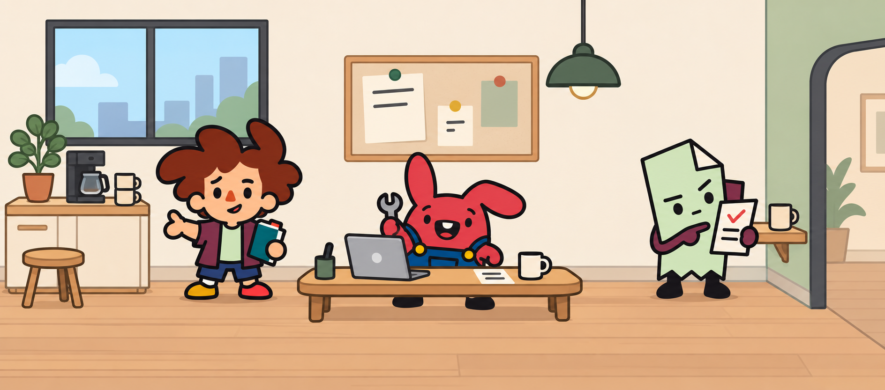
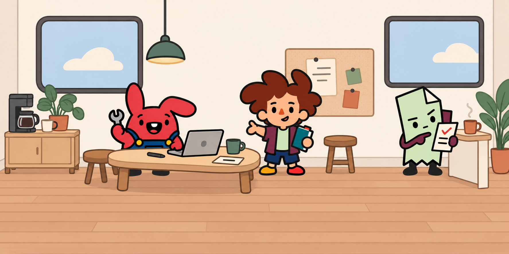
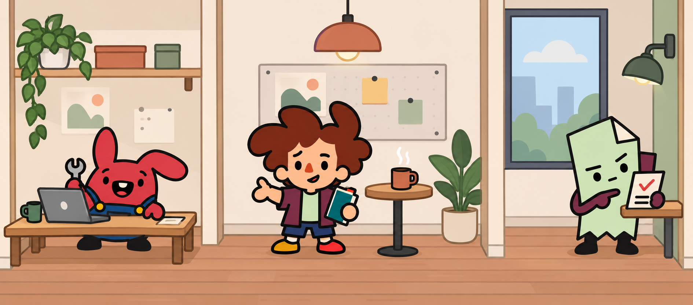
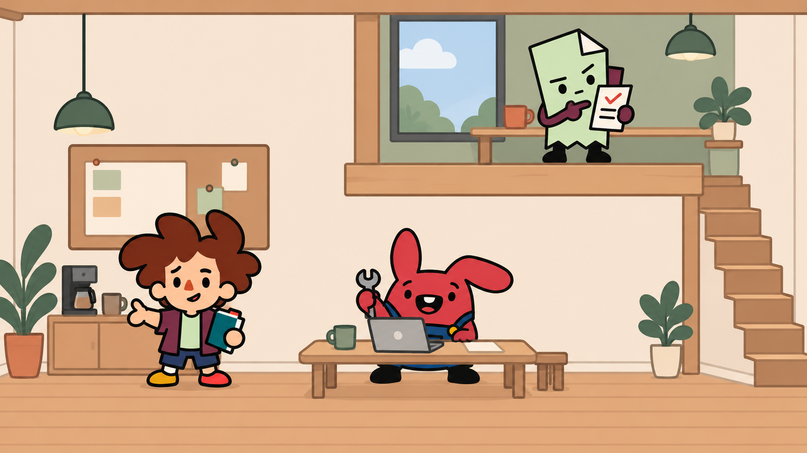

Original flat dollhouse studio studies around A · Unruly. Linked Studio is the proposed base.
1. Linked Studio · preferred

Mood: Warm, spare and slightly offbeat.
Growth: A shared hub for three; add one two-seat wing for five and two wings for eight. Keep one room or one room pair in focus.
Communication: Quiet wall strip above each participant; a separate card lane links door ports.
2. Window Atelier

Mood: Airy creative workroom with a broad window rhythm.
Growth: Repeat offset window-and-work alcoves in adjacent rooms; navigate by room at larger crew sizes.
Communication: Bubbles occupy blank wall panels between windows; cards travel across the open middle strip.
3. Coffee Hinge

Mood: Friendly social threshold between focused work spaces.
Growth: The shared coffee foyer connects compact maker and quiet wings; more wings share its message ports.
Communication: Messages cross a dedicated space above the open threshold; local bubbles remain inside their room.
4. Pocket Loft

Mood: A compact little workshop house with a quiet upper nook.
Growth: Grow through connected room compartments on a second level. A room navigator preserves participant scale; transfers use matched doorway ports.
Communication: Each compartment has its own bubble strip and card lane; cross-floor messages enter a clearly labeled room port.